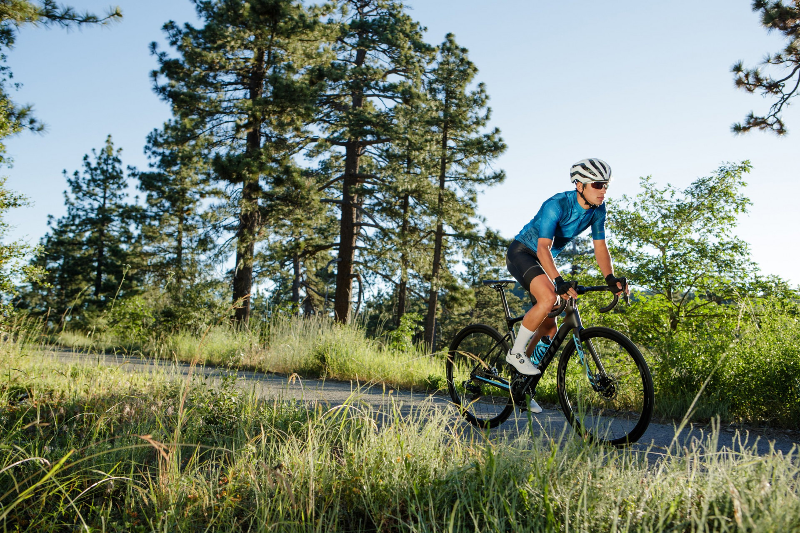

Играње фудбал

Нештото во кое најмногу уживам е играњето на фудбал. Една од најпопуларните игри на отворено е фудбалот. Тоа е 90-минутен натпревар кој е полн со возбуда и возбуда. Гледачот добива уживање до последната минута од играта.
Фудбалот е игра што нè прави фит и здрави, а исто така не учи на вредноста на тимската работа. Без тимска работа, фудбалски натпревар никогаш не може да се добие.
Оригиналноста на фудбалот може да се следи до грчката цивилизација. Но, модерната фудбалска игра потекнува од Англија. Во моментов фудбал се игра насекаде низ светот.
Возење велосипед
 Уште едно нешто кое подеднакво го сакам е возењето на велосипед. Возењето велосипед е една од првите вештини која секој од нас ја искусил уште
во најраното детство. Без разлика дали истата сме ја практикувале секојдневно или повремено, возењето велосипед претставува вештина која откако првично ќе
ја совладаме останува до крајот на животот. Сигурно се сеќавате на она позитивно чувство кое го имавте кога за првпат седнавте на велосипед и ги
свртевте педалите, а тој се придвижи. Чувства на леснотија, слобода и адреналин се оние чувства кои сите ние сме ги почувствувале при првото самостојно возење
велоспед. Незаборавно.